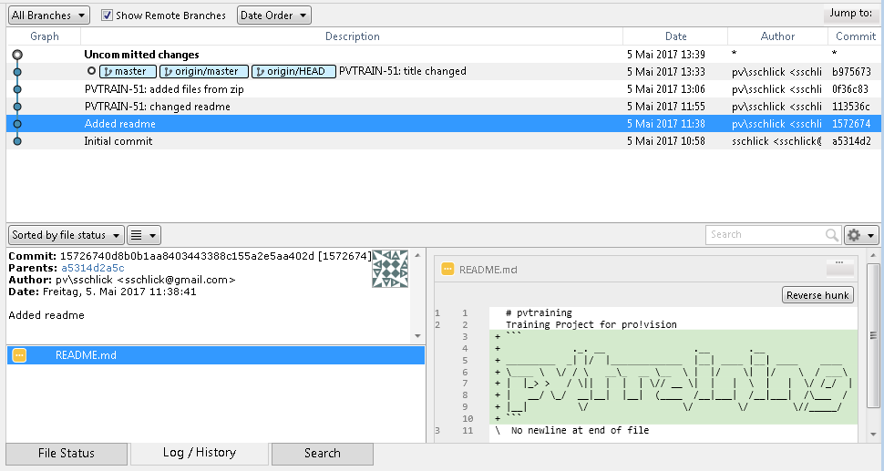
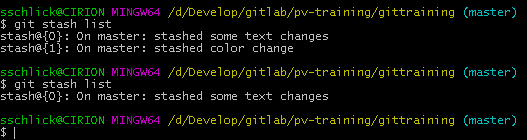

Sebastians Branch
I welcome you to this train-ride towards understanding Git, with stops at Introduction to Git, First Steps, Excercise 1, Branching & Merging, Rebasing & Clean-up and last stop will be Advanced topics & Retrospective.
Leela, are you alright? You got wanged on the head.
I had more, but you go ahead. Morbo can't understand his teleprompter because he forgot how you say that letter that's shaped like a man wearing a hat. And when we woke up, we had these bodies. And remember, don't do anything that affects anything, unless it turns out you were supposed to, in which case, for the love of God, don't not do it!
Why, those are the Grunka-Lunkas! They work here in the Slurm factory. Dr. Zoidberg, that doesn't make sense. But, okay! I am Singing Wind, Chief of the Martians. Fatal. Oh, but you can. But you may have to metaphorically make a deal with the devil. And by "devil", I mean Robot Devil. And by "metaphorically", I mean get your coat.
And so we say goodbye to our beloved pet, Nibbler, who's gone to a place where I, too, hope one day to go. The toilet.
Look, last night was a mistake. So, how 'bout them Knicks? Anyhoo, your net-suits will allow you to experience Fry's worm infested bowels as if you were actually wriggling through them. I daresay that Fry has discovered the smelliest object in the known universe!